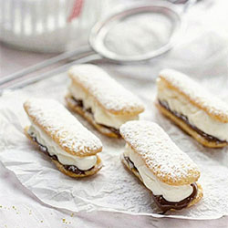
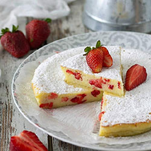
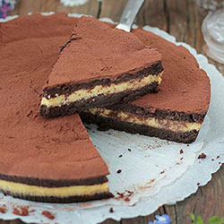
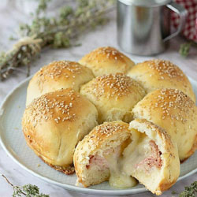
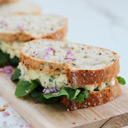
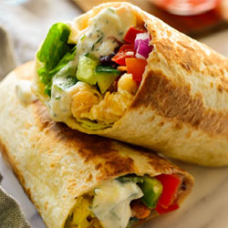

Galletitas con mascarpone y nutella, tiene una combinación de sabores que a nadie puede dejar indiferente.

Tarta de frutilla y ricota. Un postre perfecto y delicioso para una merienda de verano.

Torta de chocolate y ricota. Suave masa de chocolate con ricota en su interior. ¡Imperdible!
Salado

Una exquisita suave masa con jamón y queso para disfrutar en todo momento del día.

Este sandwich de pollo es prácticamente una comida completa entre dos panes.

¡Pruebe estos wrap vegetarianos llenos de sabor rellenos de cebollas en escabeche, vegetales asados y salsa picante!